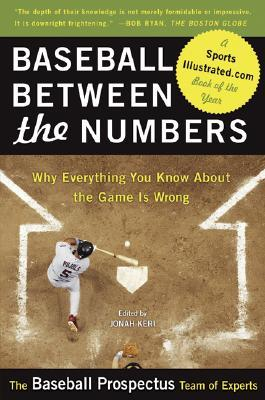

In the numbers-obsessed sport of baseball, statistics don't merely record what players, managers, and owners have done.
Properly understood, they can tell us how the teams we root for could employ better strategies,
put more effective players on the field, and win more games. The revolution in baseball statistics that began in the 1970s
is a controversial subject that professionals and fans alike argue over without end. Despite this fundamental change in the way we watch and understand the sport,
no one has written the book that reveals, across every area of strategy and management, how the best practitioners
of statistical analysis in baseball-people like Bill James, Billy Beane, and Theo Epstein-think about numbers and the game.
Baseball Between the Numbers is that book. In separate chapters covering every aspect of the game, from hitting, pitching,
and fielding to roster construction and the scouting and drafting of players, the experts at Baseball Prospectus examine
the subtle, hidden aspects of the game, bring them out into the open, and show us how our favorite teams could win more games.
This is a book that every fan, every follower of sports radio, every fantasy player, every coach, and every player,
at every level, can learn from and enjoy.